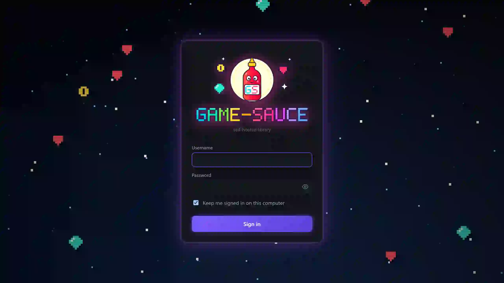

在你自己的电脑上
下载适用于 Windows、macOS 或 Linux 的桌面应用或便携版。无需安装其他任何东西：不需要服务器，不需要 Docker，也不用修改任何设置。
下载最新版本免费 · 开源 · 自托管
game-sauce 会为你拥有的游戏建立目录、获取封面，让许多游戏直接在浏览器中运行，其余的则用你电脑上的模拟器启动，还能通过用手柄操作的大屏幕模式把整个游戏库搬到电视上。
Windows · macOS（Apple 芯片）· Linux · Docker、Unraid 和 Proxmox · 树莓派
截图和视频展示的是一个演示游戏库。游戏封面和美术资源归其各自所有者所有。
全家共用一个游戏库，运行在你自己掌控的机器上。
选一款游戏，直接在电脑上玩。无需设置，毫不费事。
浏览、搜索、游玩，全程无需碰鼠标。
两种外观，各有浅色和深色。随时切换。
给最爱加星标，其余的分组整理。
无需离开游戏页面，就能阅读说明书。
Windows、Mac、Linux、Docker、Raspberry Pi、Proxmox 和 Unraid。
每人一个登录账号，可设置角色，孩子只能玩、不能改。
支持英语、法语、中文、西班牙语、葡萄牙语、德语、日语和意大利语。
定时备份，恢复也很简单。
一眼看出一切是否正常。
耗时的任务，比如为游戏生成指纹，趁你睡觉时完成。
新版本发布时，管理员会在聊天中收到通知。
不追踪、没有套路。免费，并且属于你。
主机、掌机、电脑和街机，并排收纳。
与 No-Intro 和 Redump 比对，确认转储完好无误。
找出多余的副本，并建议保留哪一个。
把 sf2 这样的文件名变成 Street Fighter II。
查看你拥有每个平台官方列表的多少，涵盖 ROM、实体版和数字版。
以 CSV 导入和导出你的游戏目录。
你的游戏库背后的数据，献给爱看数字的人。
可从 ScreenScraper、SteamGridDB、IGDB 或 TheGamesDB 获取封面、徽标和视频，也可使用自己的素材。
来自内置演示游戏库的两段短片。
专为手柄和沙发设计的全屏视图。在游戏库中一键打开，再让浏览器或桌面应用在电视上全屏显示。


全屏的封面架，排成柔和的弧形。选择一个系列和平台，用方向键、鼠标滚轮、滑动或手柄滚动，然后按下开始游戏。
把你真实游戏架上的盒装游戏记录下来，可以手动添加或从列表导入，与你的数字收藏放在一起。每个人都有自己的游戏架。
服务器上的用户之间可以互发私信，管理员也可以发布通知。一切都不会离开你自己的机器。

经典和现代两种外观，浅色和深色两种主题。同一个游戏库，由你选择。





不附带。game-sauce 是用来管理你自己拥有的游戏的。它不包含也不提供游戏或 BIOS 文件，也不会替你下载游戏：你需要自带收藏。游玩方面，浏览器游玩由开源模拟器 EmulatorJS 提供，点击“开始游戏”时浏览器会加载它。在电脑上游玩时，“模拟器”页面会推荐模拟器并提供获取链接，启动器则会启动你自己安装的模拟器。
是的。它以 MIT 许可开源。无需创建账号，没有订阅，也没有任何追踪。有些元数据数据源要求你注册自己的免费账户才能使用其服务。
许多不需要 BIOS 的老主机可以直接在网页中运行。较新的系统，以及任何超出浏览器能力的游戏，则会通过启动器在你电脑上的模拟器中运行。
在你指定的文件夹里不会。它直接读取原位置的文件，绝不会移动、重命名或删除其中的文件。清理工具只会处理图片以及 game-sauce 自己存储的文件。
可以。为你信任的人创建账户即可。合集仅对创建者本人可见，仅游玩账户只能看到可在浏览器中游玩的游戏。
请在 GitHub 上提交 issue 或发起讨论，或发邮件到 hello@gamesauce.app。设置中的“系统健康状况”页面可以生成一份可复制粘贴的报告，其中不含任何机密信息。
game-sauce 是免费开源的。如果它对你有用，可以请我喝杯咖啡。这能让我有更多时间开发新功能、在 Windows、Mac 和 Linux 上测试，并回答大家的问题。